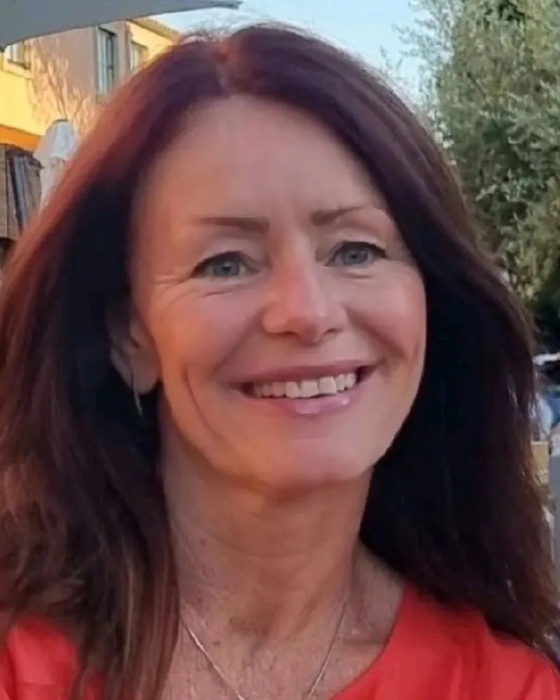
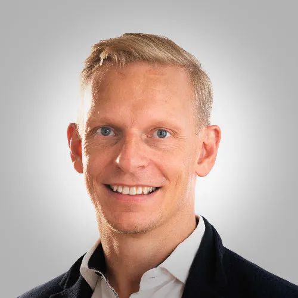
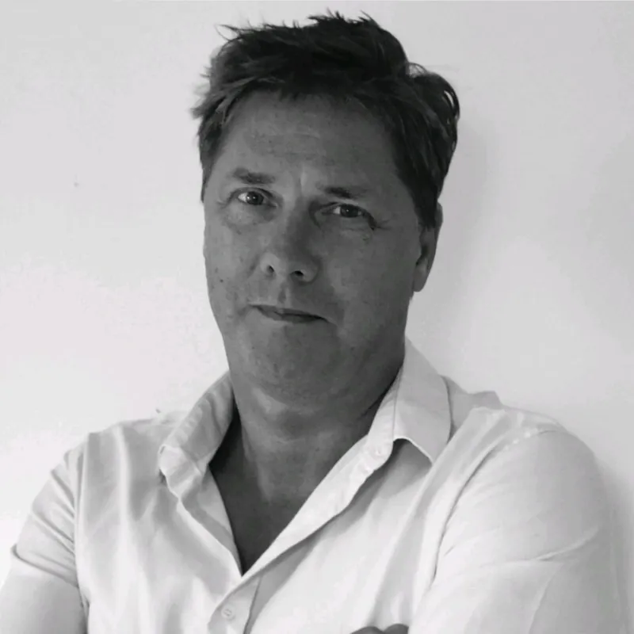
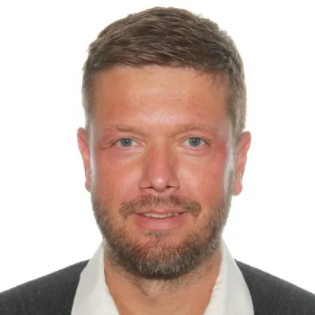
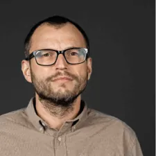
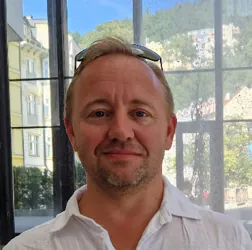
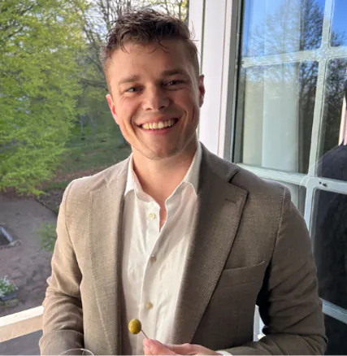

Therese Hansson Rosenqvist
Chief Executive Officer.
CEO with over 15 years in product companies delivering mission-critical solutions,
including 112 emergency response systems for civil security and healthcare systems for
the public sector. Combines this with a strong background in the consulting industry,
working with clients across defence, civil security, automotive, telecom and medtech.

Peter Åsberg
Deputy Chief Executive Officer.
Background as a software developer, project manager and head of development, with
experience across a range of domains including automotive, e-commerce, aviation and
fintech. Combines this with more than 10 years of experience as a leader within the
consultancy domain.

Lars-Olof Ingvarsson
Head of AI Operations & Board Member.
Brings more than 25 years of experience from the software industry, with broad
expertise in programme and project management, sales and team development. Has
successfully led complex international projects, consistently focusing on efficiency,
time to market and quality.
Michael Nordseth
Senior Software Developer & Architect.
Senior software developer and architect with deep expertise in the public safety
domain and artificial intelligence. Extensive hands-on experience with AI, from
designing AI-driven solutions to integrating them into robust, production-ready
systems — combining strong architectural skills with in-depth domain knowledge to
build reliable, secure and scalable solutions for mission-critical environments.

Andreas Henningsson
Senior Software Developer & System Architect.
Senior software developer and system architect with more than 20 years of experience
spanning the full software development lifecycle. A proven track record of delivering
systems for law enforcement and security-sensitive operations, including the Swedish
Tax Agency — information exchange within the Swedish justice system (RIF) — and Saab
Public Safety Solutions, developing security systems for airports, police and public
transport.

Fredrik Elmqvist
Senior Database & Infrastructure Specialist.
Senior database and infrastructure specialist with more than 15 years of experience
designing, implementing and managing business-critical data platforms and SQL Server
environments in large organisations. Security is an integral part of Fredrik's work —
from access control, hardening and data protection to backup, recovery and resilient
operations. His expertise in building reliable, well-structured data platforms also
provides the foundation organisations need to adopt AI and advanced analytics.

Martin Klarqvist
Senior Software Architect & System Developer.
Senior software architect and system developer with extensive experience designing,
developing and evolving business-critical software. Combines hands-on full-stack
development with software architecture, technical leadership, product development and
close collaboration with stakeholders.
Kemp Calalo
Agentic AI Engineer.
Agentic AI engineer with fourteen years of software engineering experience. Designs
the working environment that lets AI agents contribute to production systems safely:
reusable skills, indexed context, explicit tool routing, multi-agent verification and
deterministic guardrails. Combines this with hands-on architecture, development,
delivery and operation of AWS and Kubernetes platforms.

August Bredberg
Senior Fullstack Developer.
Experienced fullstack developer in the C#/.NET ecosystem with a strong focus on
AI-powered solutions, from AI assistants grounded in company data to RAG, vector
search and LLM integrations. AI coding agents are an integral part of his development
workflow. Recently delivered AML compliance systems in a regulated banking
environment.